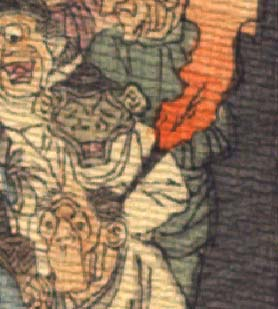

浅黒い肌の鬼。頭に黒い頭巾状のものをかぶっている。大きな耳が目よりも上につき、額から鼻の上にかけて皺が寄っている。目は細く、鼻は豚のようである。あごが尖っている。白い上着を着ている。
著作者：J.Dautremer／出典：親書誌：U426_nichibunken_0123：Le vieillard et les démons／日付：2006／資源識別子：U426_nichibunken_0123_0002_0006
Copyright (c)2010- International Research Center for Japanese Studies, Kyoto, Japan. All rights reserved.